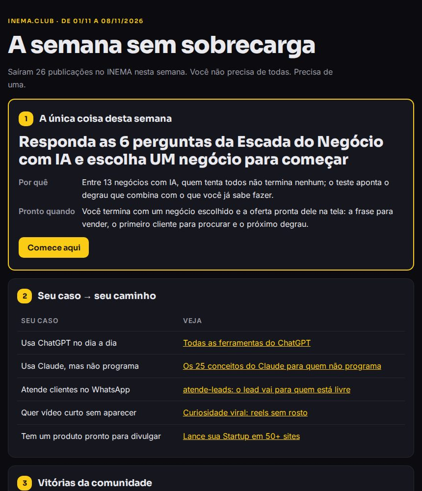
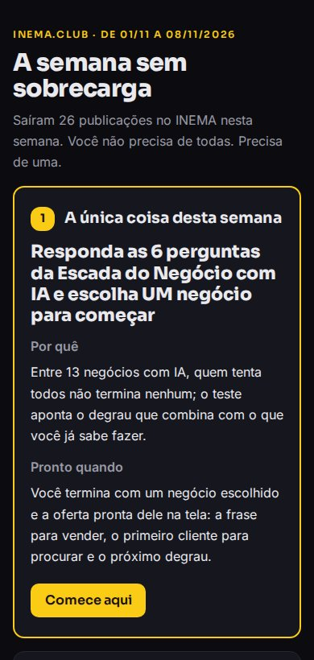

Um post por semana com a única coisa a fazer, as vitórias dos membros e o que pode ignorar. O kit monta o texto do Telegram, o e-mail e a página. Você escolhe e cola.
O semana-inema é um kit gratuito para quem cuida de uma comunidade (grupo de Telegram, WhatsApp, turma, lista de e-mail). Toda semana ele lê o que saiu de novo nas suas fontes e monta uma edição curta com sete partes: a única coisa a fazer, o caminho para cada caso, as vitórias dos membros, o que chegou, o que pode ignorar, onde pedir ajuda e quem mais ajudou. Sai em três formatos: mensagem de Telegram, e-mail e página. Precisa só de Python no computador; nada é publicado sozinho.
Sai ferramenta nova todo dia. Quem tenta acompanhar tudo se afoga e não termina nada. A edição semanal faz o contrário: escolhe por você e dá licença para ignorar o resto.
Uma tarefa só, que termina com um resultado funcionando na mão da pessoa: um teste respondido, um agente rodando, um backup feito. "Assisti o vídeo" não conta. Uma coisa feita vale mais que dez abertas.
Uma tabela curta: "usa ChatGPT no dia a dia → veja isto", "atende clientes no WhatsApp → veja aquilo". Cada pessoa acha a sua linha sem ler a lista inteira.
Nome, o que fez funcionar e o link. Ver alguém parecido com você chegar lá convence mais que qualquer promessa. Peça licença antes de citar o nome.
A lista do que saiu na semana, lida das suas fontes, com data e link. Fica no fim de propósito: é consulta, não tarefa.
Duas a quatro novidades que podem esperar, com o motivo. Isso tira a culpa de não ter visto tudo, que é o que mais faz gente desistir.
Onde e como pedir ajuda (com o print do erro e o comando que rodou) e um ranking manual de quem respondeu dúvidas. Quem ajuda é visto, e o grupo aprende a se ajudar.
Quem chega numa comunidade de IA vê dezenas de novidades por semana. Sem alguém dizendo "comece por aqui", a pessoa salva tudo para depois e não faz nada.
A edição troca "mais conteúdo" por "uma decisão": o moderador (ou um agente, com o prompt pronto do kit) escolhe a única coisa com um critério fixo, mostra quem já conseguiu e diz o que pode ficar de lado.
O kit não decide sozinho e não publica nada. Ele junta o material e monta os três formatos; a escolha e o envio continuam com você.
Dois comandos e uma escolha no meio. Tudo roda no seu computador, sem internet e sem chave de nada.
Três tipos, ligados no config.json: uma tabela em Markdown com o que foi publicado (lê só as linhas marcadas como publicadas), o histórico de commits de repositórios seus (git log) ou um feed salvo no disco (JSON ou RSS). Entra só o que caiu na janela da semana.
vitorias.md (nome — o que fez — link), ajudantes.md (nome — número de respostas) e edicao.md (a única coisa, a tabela de casos e o pode ignorar). São textos simples, que qualquer editor abre.
Uma mensagem do Telegram aceita até 4.096 caracteres. O kit conta do mesmo jeito que o Telegram (emoji vale 2) e, se passar, divide em telegram.md, telegram-2.md… cortando no começo de uma seção.
O kit usa apenas o que já vem com o Python (nada para instalar com pip). O Claude Code ou o Codex são opcionais: servem para escolher a única coisa com o prompt pronto; dá para escolher à mão.
Python 3 já vem instalado. Confira e instale o git, se faltar.
python3 --version sudo apt install -y git
O comando abaixo instala as ferramentas da Apple, que trazem o python3 e o git.
xcode-select --install python3 --version
Instale o Python em python.org e o Git em git-scm.com. Nos comandos deste guia, troque python3 por py.
py --version git --version
Os comandos são os mesmos no Ubuntu e no Mac. Rode cada um no terminal, dentro da pasta do kit.
Cria a pasta semana-inema com tudo dentro e entra nela.
git clone https://github.com/inematds/semana-inema.git cd semana-inema
Roda os testes do kit (não usam internet). Tem que terminar com OK.
python3 -m unittest discover -s tests
O config.exemplo.json lê uma cópia da semana do INEMA que vem no kit (exemplos/2026-11-08/publicados.md). Assim você vê as três saídas antes de mexer em nada. Os arquivos saem em saida/2026-11-08/.
python3 semana.py gerar --config config.exemplo.json --de 2026-11-01 --ate 2026-11-08
Crie um arquivo publicados.md na pasta do kit e anote ali, uma linha por vez, o que a comunidade recebeu (vídeo, aula, guia, live). A coluna Estado começa com "publicado" e traz a data no formato dia/mês/ano e o link. Linha sem "publicado" (por exemplo "em produção") fica de fora.
| Tema | Data | Estado | |---|---|---| | Aula: o primeiro agente | 05/11/2026 | publicado 05/11/2026 — https://exemplo.com/aula | | Live de perguntas | 07/11/2026 | publicado 07/11/2026 — https://exemplo.com/live | | Guia do backup | 06/11/2026 | em produção |
O kit vem configurado para o INEMA. Abra o config.json num editor de texto e troque o nome, o link e o plantão (o texto que aparece na seção "Travou?"). Na primeira fonte, ponha "caminho": "publicados.md", "coluna_data": "Data" (o nome da coluna de data da sua tabela) e apague a linha padrao_id_youtube, que só serve para a tabela do INEMA. Deixe "so_com": "publicad": é a palavra que marca a linha como publicada e vale para publicado e publicada. As outras duas fontes (commits e feed) ficam desligadas com "ativo": false.
"comunidade": "Minha Comunidade",
"link": "https://minhacomunidade.com",
"plantao": { "texto": "Poste a dúvida no grupo com o print do erro.", "link": "https://t.me/meugrupo" },
"fontes": [ { "tipo": "tabela_md", "nome": "Publicados", "caminho": "publicados.md",
"coluna_titulo": "Tema", "coluna_data": "Data", "coluna_estado": "Estado", "so_com": "publicad" } ]
Abra vitorias.md e ajudantes.md, apague as linhas de exemplo do INEMA e escreva uma linha por pessoa. Peça licença antes de citar o nome. O ranking de ajudantes é opcional; vazio, aparece como vazio.
- Nome do membro — publicou o primeiro site com IA — https://link-do-site - Nome do membro — 12 respostas — ajudou 3 pessoas a abrir o terminal
O rascunho lê as fontes dos últimos 7 dias (até hoje) e grava saida/<data>/rascunho.md. Para outra semana, use --ate (último dia) e, se quiser, --de (primeiro dia).
python3 semana.py rascunho
Depois escreva o edicao.md. O que vem no kit é o exemplo do INEMA; a sua edição escreve por cima dele. Com agente: abra o Claude Code ou o Codex (assistentes de IA que trabalham na pasta do seu computador) dentro da pasta do kit e cole o texto de prompts/escolher-a-unica-coisa.md; ele lê o rascunho e escolhe com o critério "1 resultado funcionando". Sem agente: preencha à mão neste formato (o mesmo modelo está no fim do rascunho). Leia o resultado antes de seguir: a decisão é sua.
# Edição da semana ## A única coisa semana: 2026-11-15 título: Monte o seu primeiro agente por que: Quem tem um agente rodando entende o resto das novidades. resultado: O agente responde a uma pergunta sua no terminal. link: https://exemplo.com/aula ## Seu caso → seu caminho | Seu caso | Veja | |---|---| | Usa ChatGPT no dia a dia | [Aula do ChatGPT](https://exemplo.com/chatgpt) | ## Pode ignorar - Notícia X — curiosidade; não muda o que você faz nesta semana.
A linha semana: tem que ser o último dia da semana que você vai gerar. Se ficar a de uma semana antiga, o kit recusa, para não publicar a edição velha por engano.
Grava telegram.md (e telegram-2.md se passar do limite), email.html e pagina.html em saida/<data>/. Cole o texto do Telegram no grupo, abra o e-mail no navegador para copiar, e ponha a página no seu site. Se usou --de/--ate no rascunho, use os mesmos aqui.
python3 semana.py gerar
O kit rodou na tabela de produções do INEMA. Das 90 linhas da tabela, 50 estavam marcadas como publicadas e com data; 26 caíram na semana e viraram "O que chegou". A única coisa escolhida foi: responder as 6 perguntas da Escada do Negócio com IA e escolher um negócio para começar. O texto do Telegram deu 3.671 caracteres e coube numa mensagem só. As vitórias do exemplo são entregas do próprio INEMA, marcadas como exemplo, e o ranking de ajudantes ficou vazio: o kit não inventa nomes. Para refazer este exemplo no seu computador, use o passo 3 do guia.


O kit faz o trabalho chato (juntar, contar, formatar). As decisões e o envio ficam com quem conhece a comunidade.